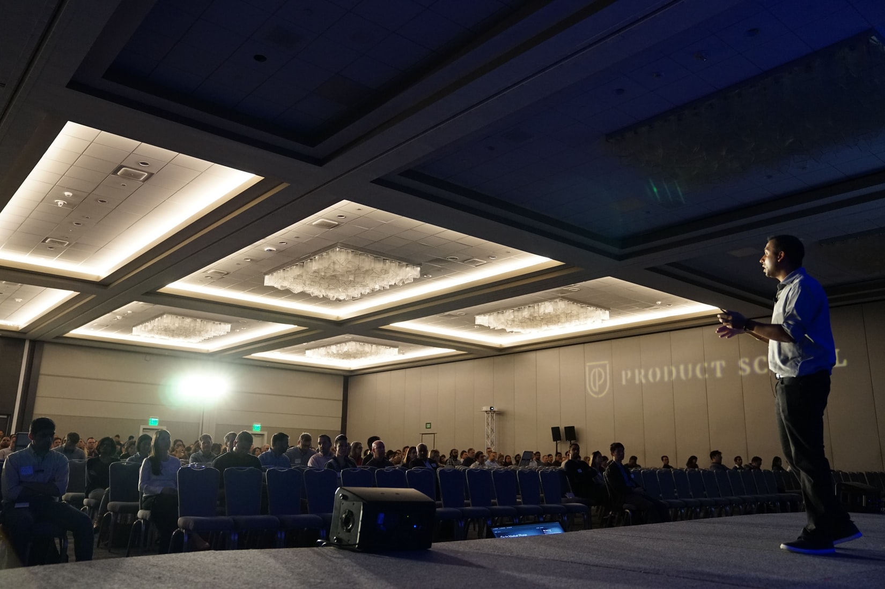

- 설명
- 피파에서 리버풀 선수
- 리버풀 별명
- 리버풀

설명:1892년에 창단되어 빌 샹클리와 밥 페이즐리 감독 시절, 붉은 제국이라 불리는 전성기를 보냈고
축구 역사에 길이 남을 명승부인 이스탄불의 기적과 안필드의 기적의 주인공이기도 하다. 1부 리그 통산 19회 우승을 차지하였으며,
잉글랜드 클럽 중UEFA 챔피언스 리그 최다 우승팀으로 잉글랜드에서 유일하게 빅 이어를 영구 소장한 명문 클럽이다.
대표적인 라인들: 마누라 라인,제토라인(개인적으로 좋아함.)
제토라인: 제라드 + 페르난도 토레스,
마누라 라인: 마네 +피르미누+ 살라
내가 생각하는 리버풀 best 11
: 공격수: 마누라 라인
미드:밀너 베이날둠 헨더슨
수비: 로버트슨 반데이크 조 고메스 아놀드
골기퍼: 알리송